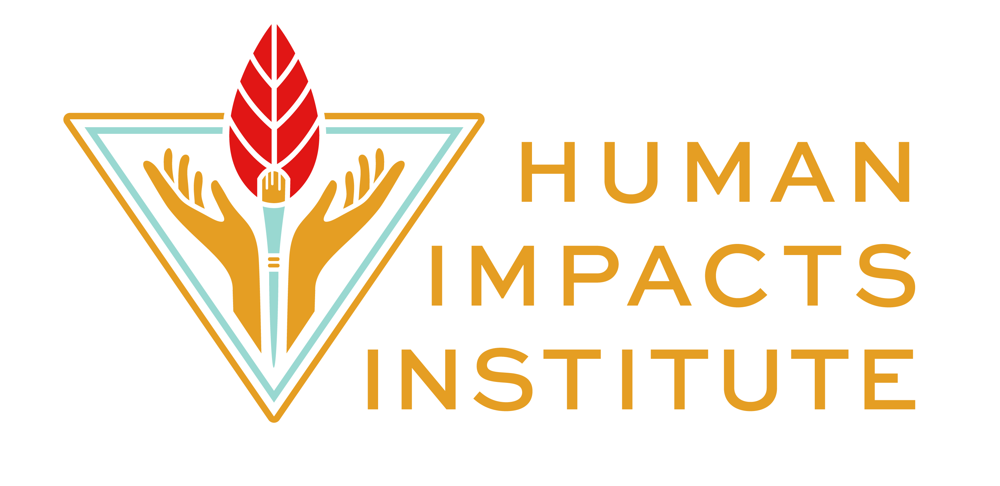

Grants Dashboard
Strategic view of funding opportunities, split into two action queues: On Deck (apply now) and Review Queue (research & update). Data pulls from the Google Spreadsheet — use the Open Spreadsheet button to edit entries. After making changes, hit Refresh to sync; updates take about a minute to appear.

Total funders
47
Missing deadlines
30
Missing links
1
With deadlines
17
On Deck
| Rank | Organization | Apply by | Days left | Links | Notes |
|---|---|---|---|---|---|
| 1 | Brooklyn ORG / Brooklyn Community Foundation | May 15, 2026 | info apply | ||
| 2 | Barker Welfare Foundation | Aug 1, 2026 | info apply | ||
| 3 | NYSERDA (Dept of Labor) - Climate Justice Fellow | Jun 30, 2026 | info apply | Rolling admissions on first come first served Up to $40k per fellow Fellow must be NYS resident and from a disadvanta... | |
| 4 | Office of Cannabis Management | May 21, 2026 | info apply | Application will open early 2026 | |
| 5 | NYS Department of Environmental Conservation Environmental Justice - Community Impact Grants | Jul 1, 2026 | info | Application submitted 1/27/2026 | |
| 6 | Con Edison | Jun 30, 2026 | info apply | Concept Paper must be submitted before April 30th and submissions that qualify will be invited to submit an application | |
| 7 | NYS DEC Grants- Hudson River Estuary | Aug 7, 2026 | info apply | Must be pre-qualified in SFS before app deadline |
Review / Research Priority Queue
| Rank | Organization | Next deadline | Links | Notes |
|---|---|---|---|---|
| 1 | Lily Auchinloss Foundation | 2026-04-15 | info apply | Environmental/Preservation Grant opens march 15 and might be a good opportunity for HII (Robine 01/22/26) |
| 2 | Andrew W. Mellon Foundation | info apply | missing deadline They are currently taking applications on a rolling basis for "Funding Inquiries for Mellon’s Humanities in Place Pro... | |
| 3 | NY Community Trust | info apply | missing deadline Rolling admissions Typically do not fund environmental education programs | |
| 4 | Christopher Reynolds Foundation | info apply | missing deadline LOI is rolling | |
| 5 | Carmack Collective | missing deadline missing links | ||
| 6 | Rockefeller Brothers Fund | info apply | missing deadline arts/culture window closed for 2025; possible to reapply in 2026 but unsolicited success rate very low. | |
| 7 | National Geographic Foundation | info apply | missing deadline | |
| 8 | Kresge Foundation | info apply | missing deadline | |
| 9 | Edward John Noble Foundation Inc. | info | missing deadline LOI Includes: -Organizational Description: Nature and purpose of HII. -Project Statement: A concise statement of the ... | |
| 10 | Lever for Change - Enlight Foundation | info apply | missing deadline No current relevant open calls noted, but “Emerging Climate Champions Award” appears promising. Monitor. | |
| 11 | NYS Department of Environmental Conservation Environmental Justice - Green Jobs for Youth | 2026-01-28 | info apply | previous notes say no DEC grants currently fit HII (as of Jan/June 2025); deprioritize unless eligibility changes. |
| 12 | NYSP2I (The New York State Pollution Prevention Institute) | 2026-04-18 | info | |
| 13 | Commission for Environmental Cooperation | info apply | missing deadline New cycle not yet open; expected Summer 2026. | |
| 14 | Patagonia International | info | missing deadline Not funding in the USA; possibly relevant only for HII Europe work. Patagonia EU funding is currently paused | |
| 15 | HCLTech Grant Americas | info apply | missing deadline Closed 1/24/2026 | |
| 16 | M&T Bank Foundation | info apply | missing deadline Application is currently open; no known deadline | |
| 17 | Solutions Search Contest | info | missing deadline | |
| 18 | Artists Fund | info apply | missing deadline | |
| 19 | Honda Foundation | info | missing deadline Not eligible for community event sponsorship because not one of the counties they serve | |
| 20 | UMI Fund | info | missing deadline Current funder; notes say applications do not reopen until April 2026—keep warm and plan ahead. | |
| 21 | City Parks Foundation | info apply | missing deadline | |
| 22 | NBC Universal Impact Grants | 2026-04-24 | info | The applying organization’s total expenses must be between $100,000 and $1,000,000; revenue must be greater than $100... |
| 23 | Kornfeld Foundation | info apply | missing deadline | |
| 24 | R. S. Clark Foundation | info apply | missing deadline Can submit a proposal from a different foundation as long as it is relevant (focused on NYC climate leadership work) ... | |
| 25 | Draper Richards Kaplan Foundation | info apply | missing deadline No organisations that are similar to ours have been funded in the past but we fit their requirements very well | |
| 26 | Ford Foundation: Natural Resources and Climate Justice | info | missing deadline prospective applicants contacted through February 2026 | |
| 27 | Climate Smart Communities Initiative | info apply | missing deadline Must have a 3-way partnership with local/regional government and a climate scientist | |
| 28 | Andy Worhol Foundation for the Visual Arts | 2026-03-01 | info | Application currently open |
| 29 | Mitsubishi Corporation Foundation for the Americas | info apply | missing deadline "Ideal timing for proposals is during the first quarter of the calendar year." | |
| 30 | Nathan Cummings Foundation | info apply | missing deadline Currently accapting LOI's Mainly focused on U.S. South Aligned with "Environmental Harms" focus area |